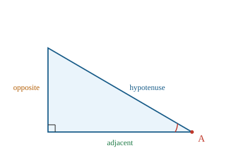
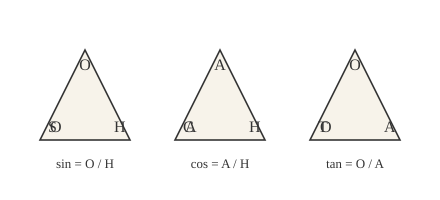
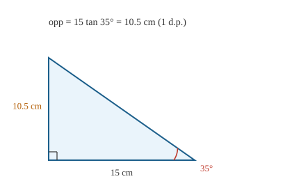

<script>if(location.hostname.endsWith('onrender.com'))location.replace('https://math-sandbox.pages.dev'+location.pathname+location.search+location.hash)</script>
<section class="theory" data-section="IGCSE-15.3">
<h2>15.3 Understanding the tangent, cosine and sine ratios</h2>
<p class="src">Based on Cambridge IGCSE Mathematics Core &amp; Extended Coursebook, Chapter 15, printed pp.479–494 (labelling sides, the tan ratio, the sine and cosine ratios, SOHCAHTOA, finding sides and acute angles). Printed pages were read from the coursebook scans (printed 479–494 = part 047 pages 4–12 and part 048 pages 1–7). Own wording and new numbers. Teaching stops before 15.4 Exact trigonometric ratios on printed p.495. The calculator is assumed to be in degrees mode.</p>
<p class="key-words"><strong>Key words:</strong> <em>hypotenuse</em>, <em>opposite side</em>, <em>adjacent side</em>, <em>sine ratio</em>, <em>cosine ratio</em>, <em>tan ratio</em></p>
<p>In a right-angled triangle the longest side, which is opposite the right angle, is the <strong>hypotenuse</strong>. Relative to a chosen acute angle \(A\), the <strong>opposite side</strong> is the side that faces \(A\), and the <strong>adjacent side</strong> is the remaining shorter side (the one that meets \(A\) and is not the hypotenuse).</p>
<figure>

<figcaption>The names “opposite side” and “adjacent side” depend on which acute angle you are using. The hypotenuse does not.</figcaption>
</figure>
<p>The <strong>tan ratio</strong> of an acute angle \(A\) is the opposite side divided by the adjacent side:
\[\tan A=\dfrac{\text{opp}(A)}{\text{adj}(A)}.\]
This value depends only on the size of \(A\), not on the size of the triangle. The <strong>sine ratio</strong> and the <strong>cosine ratio</strong> use the hypotenuse:
\[\sin A=\dfrac{\text{opp}(A)}{\text{hyp}},\qquad \cos A=\dfrac{\text{adj}(A)}{\text{hyp}}.\]
A memory aid is SOHCAHTOA: sine is opposite over hypotenuse, cosine is adjacent over hypotenuse, and tan is opposite over adjacent.</p>
<figure>

<figcaption>Each trio of letters is a fraction: the first letter names the ratio, the letter at the top is the numerator, and the letter at the bottom is the denominator.</figcaption>
</figure>
<p>To find an unknown side, write the ratio that uses the two sides you need, substitute the values you know, and rearrange. Keep full calculator accuracy until the final rounding. To find an unknown acute angle, rearrange to obtain the ratio and then use the inverse tan, inverse sine or inverse cosine key on the calculator.</p>
<figure>

<figcaption>Worked example 1: the opposite side is \(15\tan 35^\circ=10.5\) cm, to 1 decimal place.</figcaption>
</figure>
<div class="worked-example">
<h4>Worked example 1</h4>
<p class="src">Book: the tan-ratio length calculation on printed p.481, Worked example 4 style. New numbers.</p>
<p>In a right-angled triangle the adjacent side to a \(35^\circ\) angle is 15 cm. Calculate the opposite side. Give your answer to 1 decimal place.</p>
<ol class="steps">
<li>\(\tan 35^\circ=\dfrac{\text{opp}}{15}\), so \(\text{opp}=15\tan 35^\circ\). <span class="mark">M1</span></li>
<li>\(15\tan 35^\circ=10.503\ldots\), which is 10.5 cm to 1 decimal place. <span class="mark">A1</span></li>
</ol>
<p class="final"><strong>Answer:</strong> 10.5 cm</p>
</div>
<div class="worked-example">
<h4>Worked example 2</h4>
<p class="src">Book: Worked example 8 style, printed pp.489–490, choosing the sine or cosine ratio. New numbers.</p>
<p>A ladder of length 6.5 m leans against a vertical wall and makes a \(58^\circ\) angle with the ground. How far up the wall does the ladder reach? Give your answer to 1 decimal place.</p>
<ol class="steps">
<li>The wall is the opposite side to \(58^\circ\), and the ladder is the hypotenuse, so \(\sin 58^\circ=\dfrac{\text{opp}}{6.5}\). <span class="mark">M1</span></li>
<li>The height is \(6.5\sin 58^\circ=5.512\ldots\), which is 5.5 m to 1 decimal place. <span class="mark">A1</span></li>
</ol>
<p class="final"><strong>Answer:</strong> 5.5 m</p>
</div>
<div class="worked-example">
<h4>Worked example 3</h4>
<p class="src">Book: Worked example 9 style, printed pp.490–491, finding an angle. New numbers.</p>
<p>In a right-angled triangle the opposite side to an acute angle \(\theta\) is 8 cm and the hypotenuse is 17 cm. Find \(\theta\) to 1 decimal place.</p>
<ol class="steps">
<li>\(\sin\theta=\dfrac{8}{17}\). <span class="mark">M1</span></li>
<li>\(\theta=\sin^{-1}\bigl(\dfrac{8}{17}\bigr)=28.072\ldots^\circ\), which is \(28.1^\circ\) to 1 decimal place. <span class="mark">A1</span></li>
</ol>
<p class="final"><strong>Answer:</strong> \(28.1^\circ\)</p>
</div>
<h3>Common mistakes</h3>
<ul>
<li>Using the wrong pair of sides, for example using the tan ratio when the hypotenuse is involved, or mixing up the opposite side and the adjacent side.</li>
<li>Leaving the calculator in radian mode, or rounding a trigonometric value too early and then losing accuracy in the final answer.</li>
<li>Forgetting that the angle of elevation and the angle of depression are measured from the horizontal, so the right angle in the triangle is between the vertical and the horizontal, not between the line of sight and the vertical.</li>
</ul>
<h3>Quick checks</h3>
<div class="quick-check" data-q="QC1">
<h4>Quick check 1</h4>
<p>In a right-angled triangle, \(\sin A=\dfrac{3}{5}\) and the hypotenuse is 20 cm. What is the length, in centimetres, of the opposite side to \(A\)?</p>
<details><summary>Worked solution</summary>
<ol class="steps">
<li>\(\text{opp}=20\times\dfrac{3}{5}=12\). <span class="mark">A1</span></li>
</ol>
<p class="final"><strong>Answer:</strong> \(12\)</p>
</details>
</div>
<div class="quick-check" data-q="QC2">
<h4>Quick check 2</h4>
<p>In a right-angled triangle the adjacent side to a \(45^\circ\) angle is 9 cm. What is the length, in centimetres, of the opposite side?</p>
<details><summary>Worked solution</summary>
<ol class="steps">
<li>\(\tan 45^\circ=1\), so the opposite side equals the adjacent side and is 9 cm. <span class="mark">A1</span></li>
</ol>
<p class="final"><strong>Answer:</strong> \(9\)</p>
</details>
</div>
<div class="quick-check" data-q="QC3">
<h4>Quick check 3</h4>
<p>In a right-angled triangle, \(\cos A=\dfrac{1}{2}\) and the hypotenuse is 10 cm. What is the length, in centimetres, of the adjacent side to \(A\)?</p>
<details><summary>Worked solution</summary>
<ol class="steps">
<li>\(\text{adj}=10\times\dfrac{1}{2}=5\). <span class="mark">A1</span></li>
</ol>
<p class="final"><strong>Answer:</strong> \(5\)</p>
</details>
</div>
<p class="marks-key"><strong>Marks:</strong> M = method, A = accurate answer (depends on M), B = independent mark. Leave exact values exact unless a degree of accuracy is asked for. Use degrees mode.</p>
</section>
